De píxeles a eventos · Taller ReMoHES PUCP 2026
NOAA OISST v2.1, anomalía respecto a la climatología 1982-2011; contorno: píxeles en ola de calor ese día (detección de Hobday). Serie: anomalía media de todos los píxeles de océano de la caja Niño 1+2 (10°S-0°, 90°W-80°W), estén o no en ola de calor.
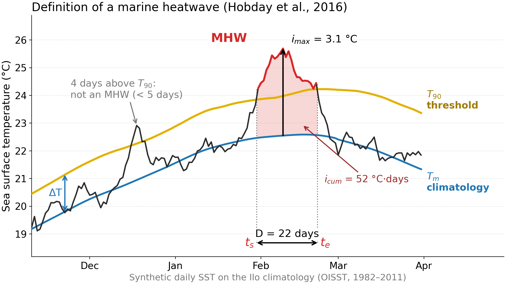
En cada punto: umbral = percentil 90 estacional; al menos 5 días seguidos sobre el umbral.
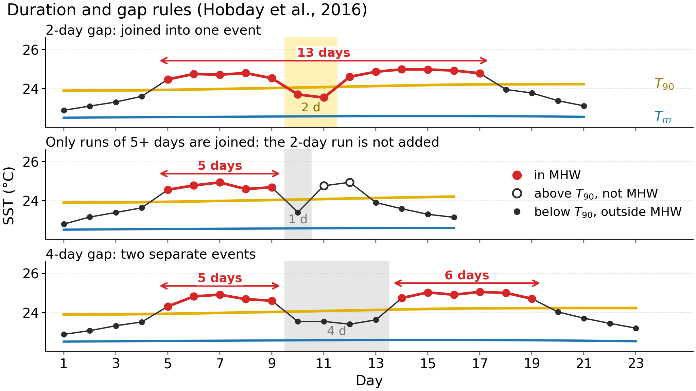
Primero se exigen 5 días seguidos; después se unen los tramos separados por brechas de hasta 2 días.
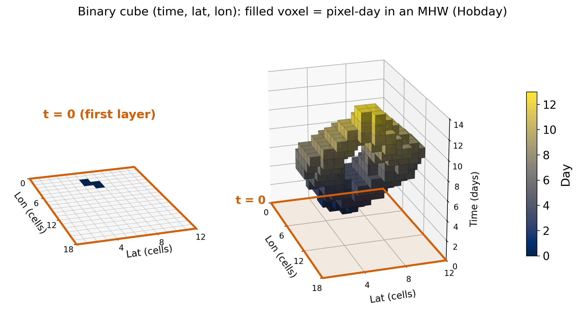
Cada vóxel (un píxel en un día) que pertenece a una ola de calor (Hobday) vale 1; cada capa del cubo es el mapa de un día y el tiempo es la tercera dimensión. Máscara sintética.
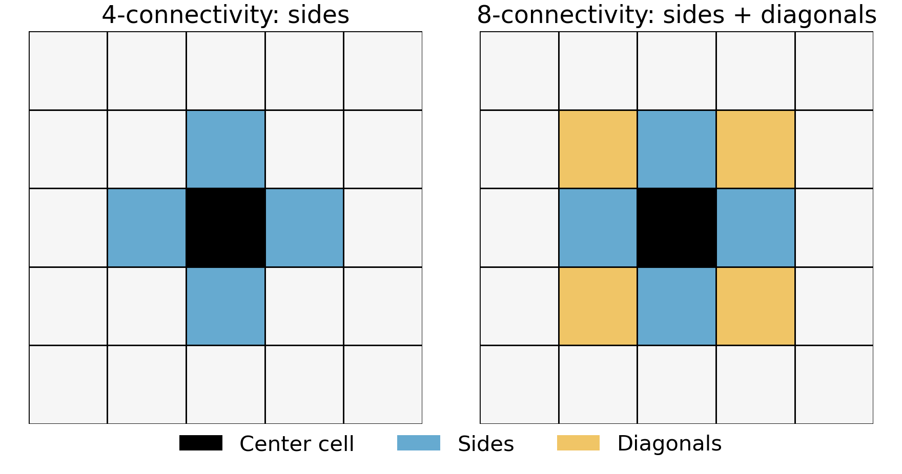
4 vecinos: comparten un lado · 8 vecinos: también las diagonales.
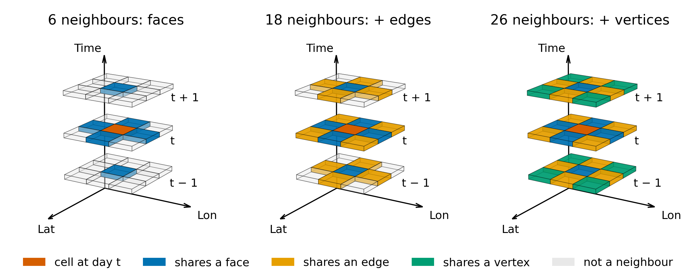
En el cubo el tiempo es una dimensión más: caras (6), más aristas (18), más vértices (26).
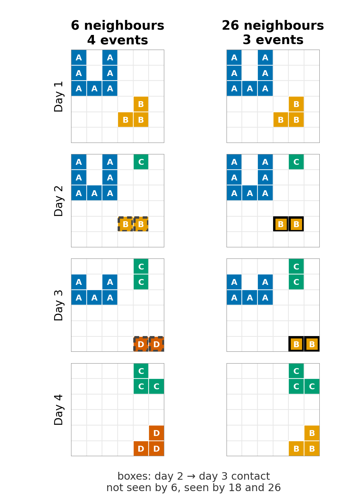
Mismo algoritmo, ahora cada vóxel mira también al día anterior. Con 6 vecinos: 4 eventos; con 26, un contacto en diagonal entre el día 2 y el 3 funde dos manchas: 3 eventos.
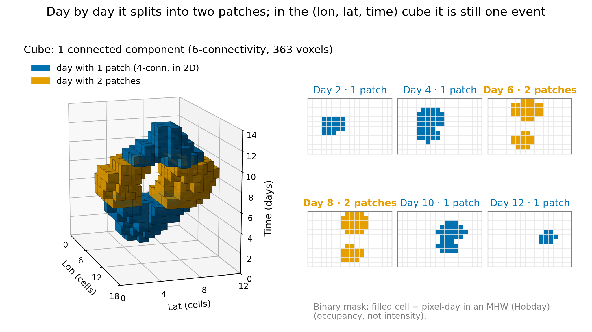
El mismo cubo del inicio. Del día 5 al 9 hay dos manchas cada día; en el cubo forman un solo componente conectado.
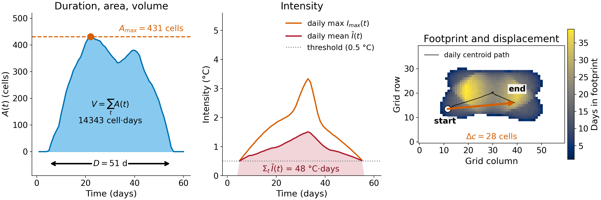
Tamaño y duración (\(A(t)\): celdas del evento el día \(t\)) \[D = t_e - t_s + 1,\quad A_{max} = \max_t A(t)\] \[V = \sum_t A(t)\]
Intensidad (\(I_{x,t} = T_{x,t} - T_{m}(x,t)\) en cada celda-día) \[\bar{I} = \operatorname{media}_{x,t} I_{x,t},\quad I_{max} = \max_{x,t} I_{x,t}\] \[I_{cum} = \sum_{x,t} I_{x,t}\]
Desplazamiento \[\Delta c = d_{gc}(c(t_s),\, c(t_e))\] \(c(t)\): centroide de la huella el día \(t\) (ponderado por \(\cos\varphi\)); \(d_{gc}\): distancia de círculo máximo, en km.
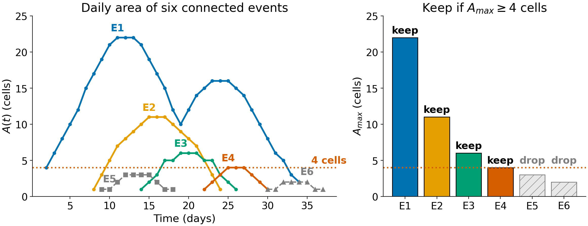
Se conserva un evento conectado si \(A_{max} = \max_t A(t) \geq 4\) celdas. Eventos sintéticos.
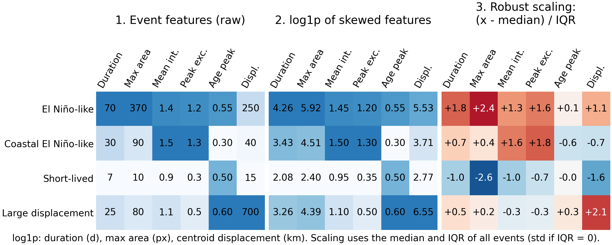
log1p de duración, área máxima y desplazamiento; luego escalado robusto \((x - \tilde{x})/\mathrm{IQR}\). Valores sintéticos.
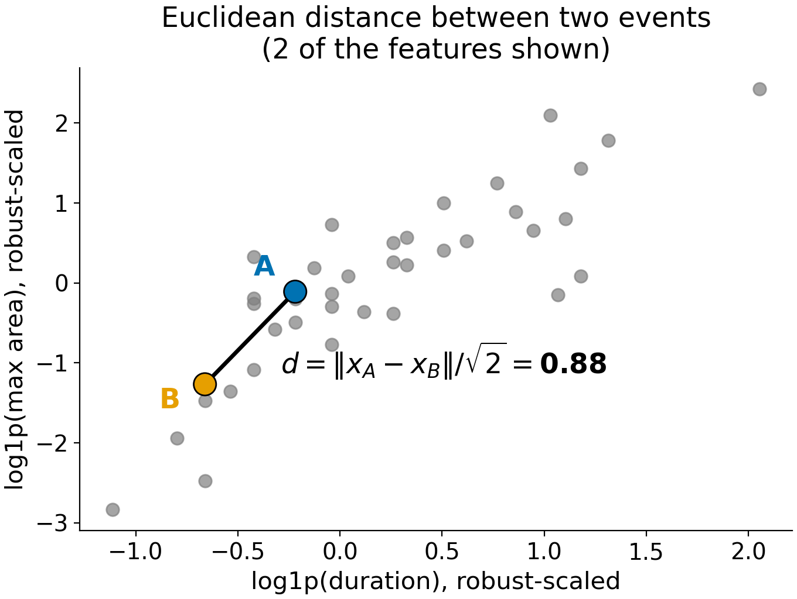
\[W = \sum_{j=1}^{k} \sum_{i \in C_j} \lVert \mathbf{x}_i - \boldsymbol{\mu}_j \rVert^2, \qquad \boldsymbol{\mu}_j = \frac{1}{|C_j|} \sum_{i \in C_j} \mathbf{x}_i\] Inercia \(W\): suma de distancias al cuadrado de cada evento a su centroide. Lloyd alterna asignar (al centroide más cercano) y actualizar (media del grupo); ningún paso aumenta \(W\) y converge a una solución estable que depende del arranque.
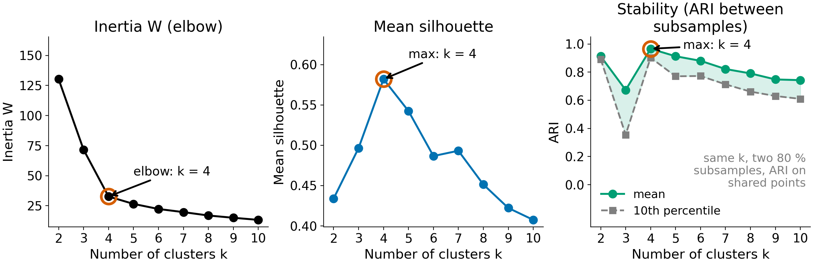
Silhouette de un evento \(i\): \[s(i) = \frac{b(i) - a(i)}{\max\{a(i),\, b(i)\}} \in [-1, 1]\] \(a(i)\): distancia media a los otros eventos de su grupo; \(b(i) = \min_{C \neq C(i)}\) distancia media de \(i\) a los eventos de \(C\). Se promedia sobre todos los eventos (\(s = 0\) si el grupo tiene un solo evento).
Estabilidad (ARI): dos submuestras del 80 % se agrupan con el mismo \(k\) y sus particiones se comparan en los eventos que comparten: \[\mathrm{ARI} = \frac{\mathrm{RI} - \mathbb{E}[\mathrm{RI}]}{\max \mathrm{RI} - \mathbb{E}[\mathrm{RI}]}\] 1 = misma partición; ≈ 0 = coincidencia al azar. Cada corte se juzga con silhouette, ARI y tamaño de los grupos; los cortes se eligen a mano.
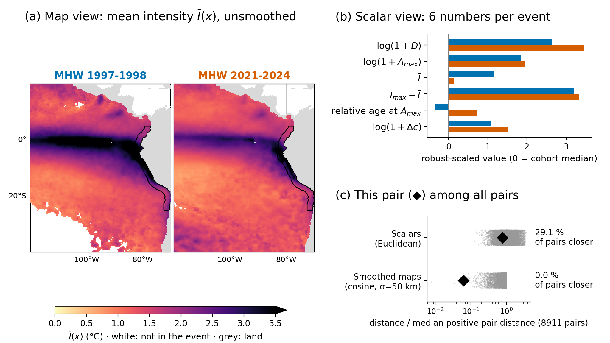
Escalares (\(p = 6\) rasgos escalados): \[d_E(A,B) = \frac{\lVert \mathbf{x}_A - \mathbf{x}_B \rVert}{\sqrt{p}}\] Mapas: \(\bar{I}(x)\) = en cada celda, media sobre los días del evento de la intensidad de su evento local. \(\mathbf{u}_A\) = ese mapa suavizado (\(\sigma = 50\) km), como vector de celdas oceánicas con \(\lVert \mathbf{u}_A \rVert = 1\): \[d_{\cos}(A,B) = 1 - \mathbf{u}_A \cdot \mathbf{u}_B\]
Detector standard, conectividad 6: los 134 eventos del 10 % superior por área máxima entre los que tocan la franja de 200 km. Cada distancia se divide por la mediana de las distancias positivas.
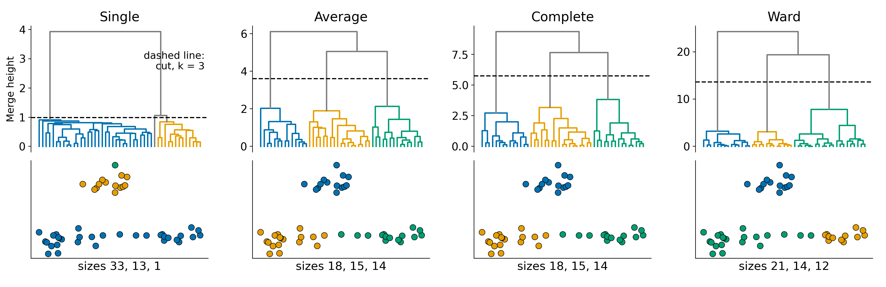
Simple \[d(A,B) = \min_{a \in A,\, b \in B} d(a,b)\]
Promedio (MHW) \[d(A,B) = \frac{1}{|A|\,|B|} \sum_{a \in A} \sum_{b \in B} d(a,b)\]
Completo \[d(A,B) = \max_{a \in A,\, b \in B} d(a,b)\]
Ward \[\Delta(A,B) = \frac{|A|\,|B|}{|A|+|B|} \lVert \boldsymbol{\mu}_A - \boldsymbol{\mu}_B \rVert^2\]
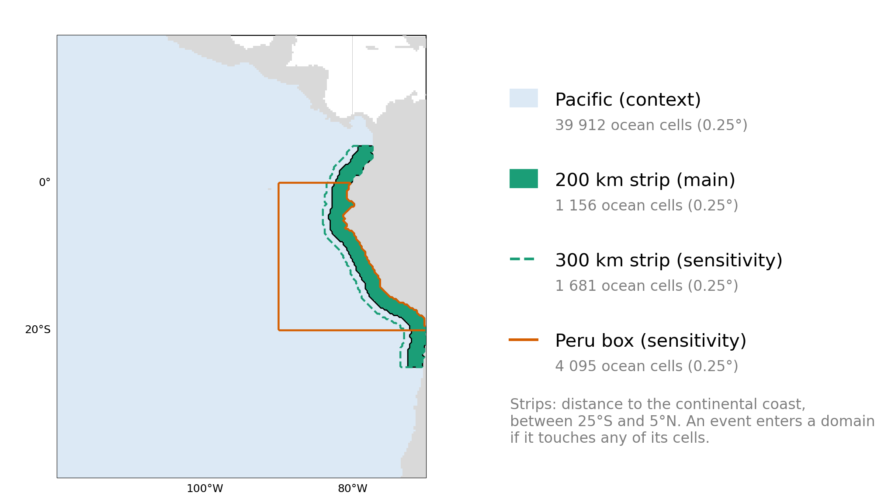
Dominio principal: franja costera de 200 km (distancia a la costa continental entre 25°S y 5°N; 1 156 celdas). Un evento entra en un dominio si toca alguna de sus celdas. Todos los resultados: detector standard (Hobday), conectividad 6.
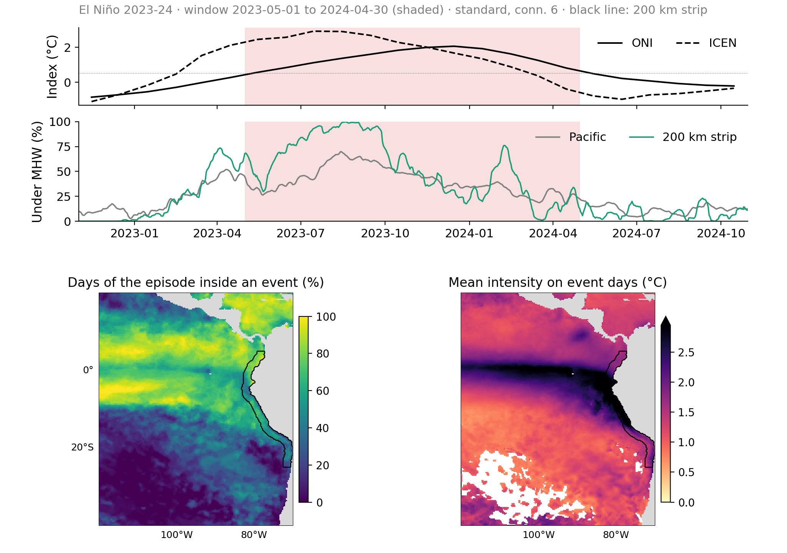
Ventana del episodio: mayo 2023 - abril 2024 (sombreado). Mapas: porcentaje de días de la ventana en que la celda está dentro de un evento, e intensidad media (anomalía de TSM) en esos días.
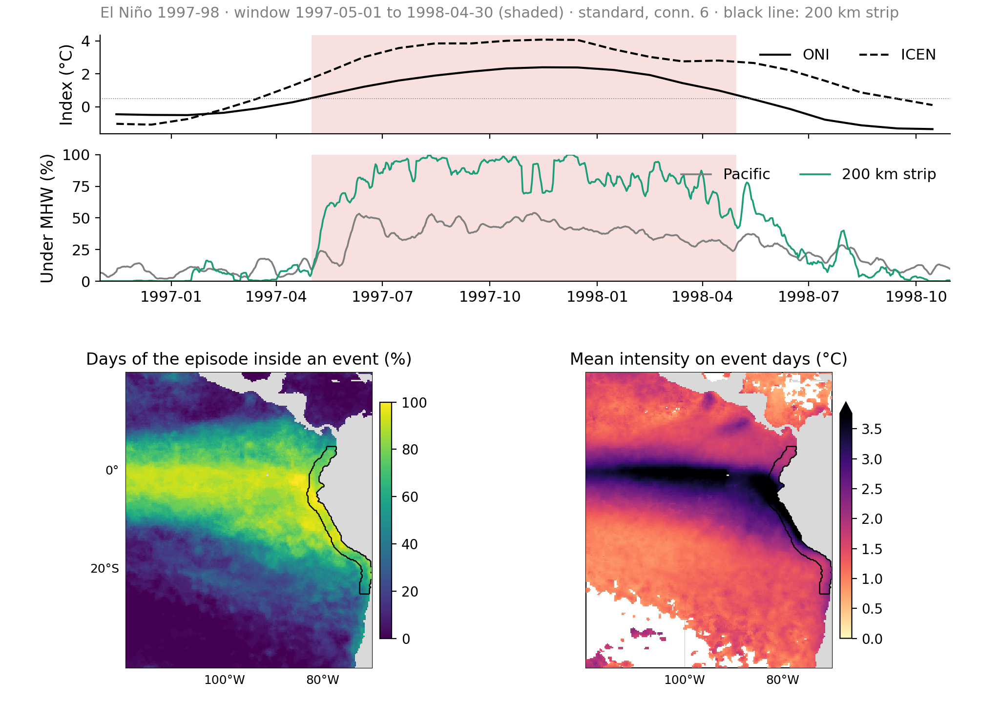
Ventana del episodio: mayo 1997 - abril 1998 (sombreado). Mismas medidas que la diapositiva anterior.
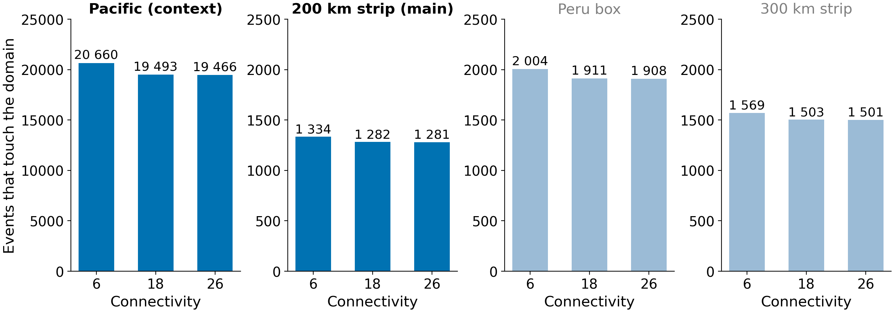
Tocan la franja de 200 km 1 334 eventos con conectividad 6, 1 282 con 18 y 1 281 con 26. Los tres dominios costeros comparten la escala (0-2500) para poder compararlos.
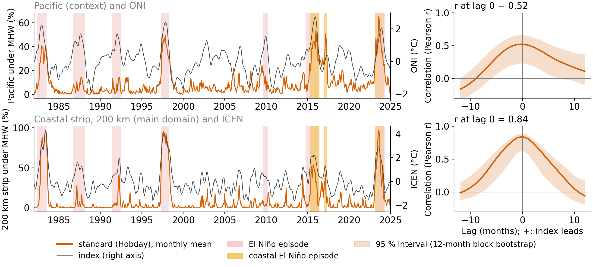
1982-2024: a desfase cero, el porcentaje mensual de la franja bajo ola de calor correlaciona r = 0,84 con el ICEN; el del Pacífico, r = 0,52 con el ONI.
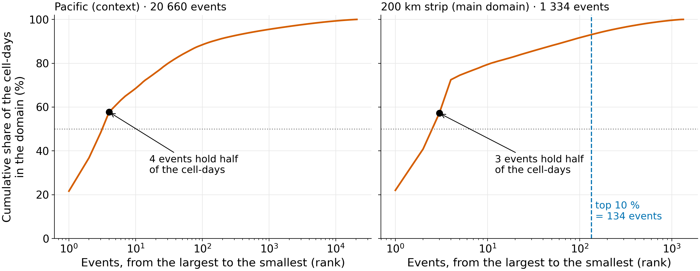
Cómo leerla: los eventos se ordenan de mayor a menor por sus celdas-día dentro del dominio (eje x, escala log) y la curva suma su aporte. En la franja, 3 de 1 334 eventos superan la mitad de las celdas-día; se agrupan aparte los 134 eventos con mayor área máxima (10 %).
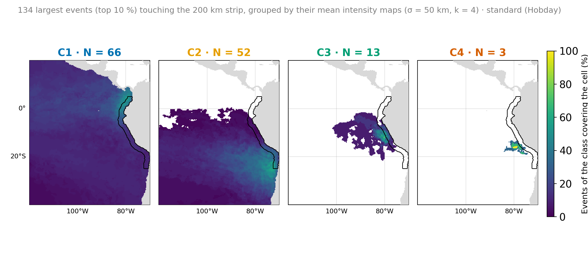
134 eventos mayores, 4 clases por la forma de su mapa de intensidad media Ī (suavizado 50 km, distancia coseno, enlace promedio, k = 4). Color: porcentaje de los eventos de la clase que pasan por cada celda.
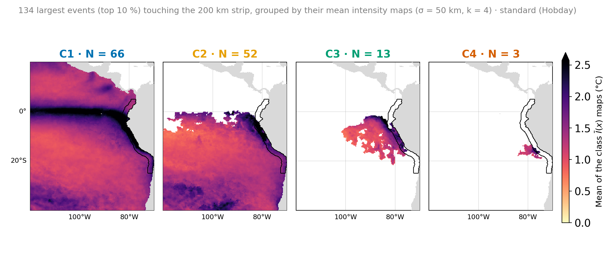
Media de los mapas Ī (°C) de los eventos de cada clase que pasan por la celda. C1 concentra la lengua cálida ecuatorial y la costa norte de Perú.
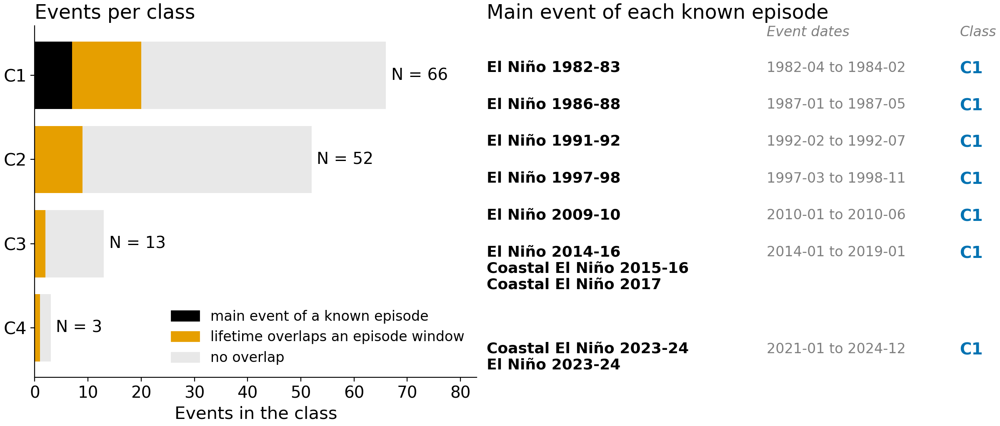
Corte por intensidad media Ī (σ = 50 km, k = 4): el evento principal de los 10 episodios de El Niño y El Niño Costero (7 eventos distintos) cae en C1.
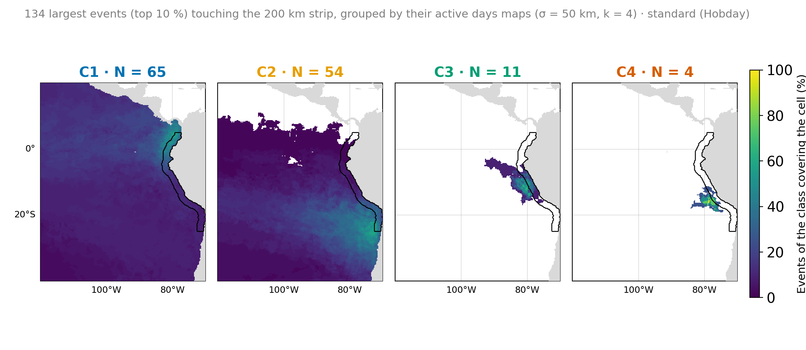
Los mismos 134 eventos agrupados por la forma de su mapa de días activos D (suavizado 50 km, k = 4).
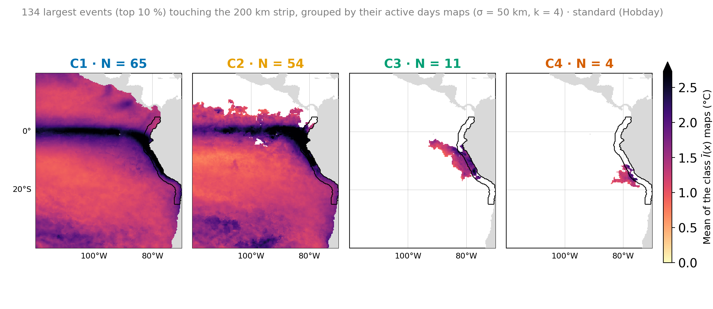
Media de los mapas Ī (°C) de cada clase del corte por días activos.
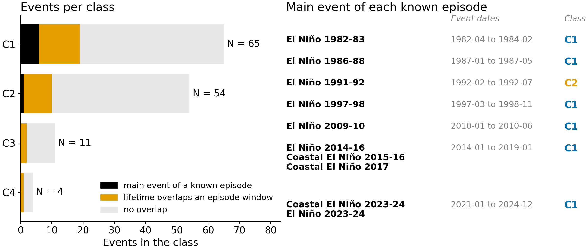
Corte por días activos D (k = 4): 9 de los 10 episodios caen en C1; El Niño 1991-92 cae en C2, la clase subtropical y de la costa sur. Con el corte por intensidad Ī, los 10 caen en C1.
Conclusiones
Perspectivas
Preguntas
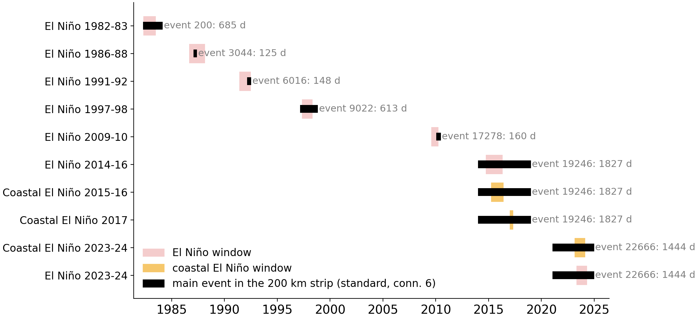
Para cada episodio, el evento con más celdas-día en la franja durante su ventana. Un mismo evento de 1 827 días (2014-2019) es el principal de El Niño 2014-16, El Niño Costero 2015-16 y El Niño Costero 2017; otro (2021-2024) lo es de El Niño y El Niño Costero 2023-24.
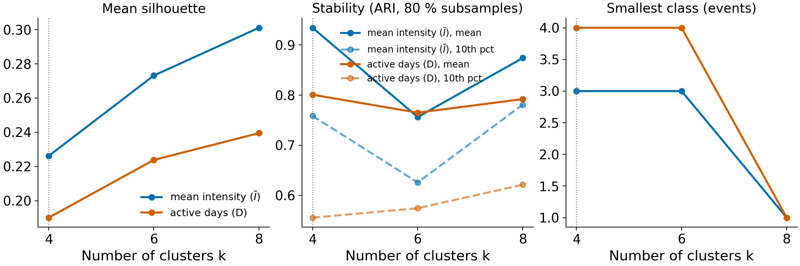
k = 4 es el corte más estable en las dos representaciones; k = 8 tiene mejor silhouette pero deja una clase de un solo evento.
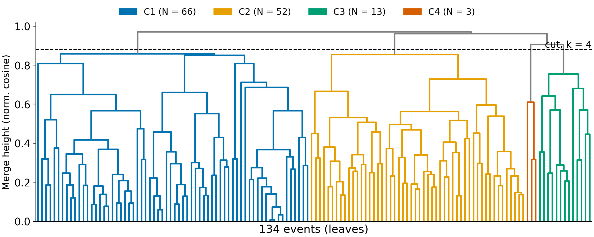
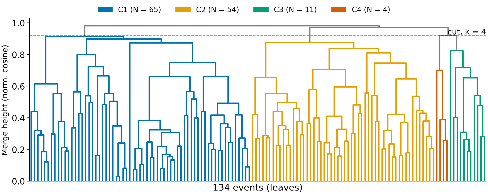